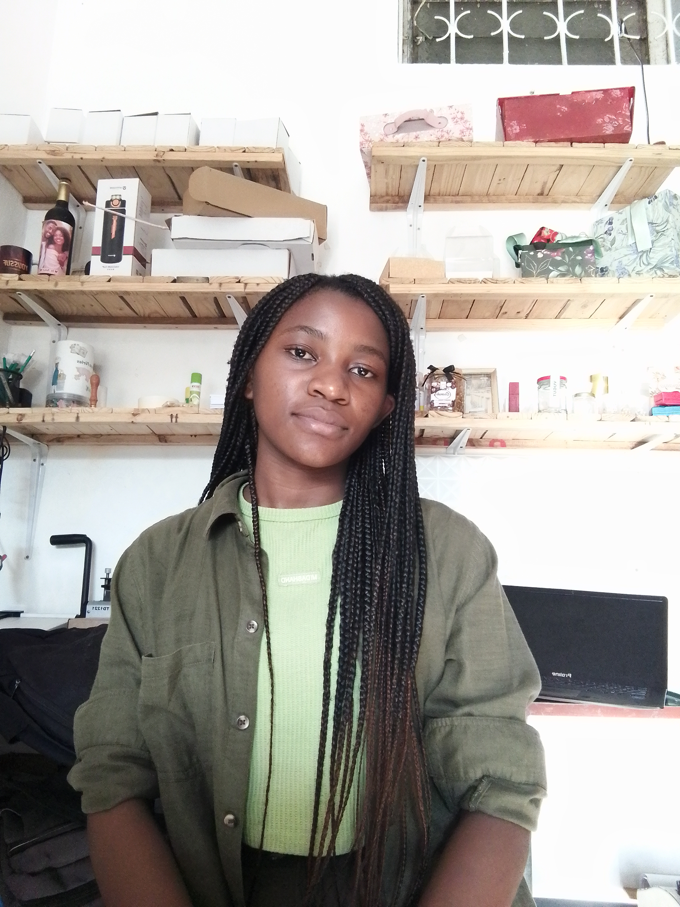

Programação
Tenho interesse no desenvolvimento de programas e soluções utilizando linguagens de programação.
Olá, eu sou
Estudante de Licenciatura em Informática
Tenho 20 anos e sou natural da cidade de Quelimane, província da Zambézia.
Atualmente frequento o segundo ano da Licenciatura em Informática, curso no qual tenho desenvolvido conhecimentos e experiências na área da tecnologia.
Sou uma estudante dedicada e procuro constantemente melhorar os meus conhecimentos através dos estudos e da realização de projetos.
Entrar em Contacto
Sou uma estudante dedicada e interessada pela área da informática. Durante o meu percurso académico, tenho procurado adquirir conhecimentos teóricos e práticos que possam contribuir para o meu desenvolvimento profissional.
Durante o tempo como estudante, já participei e desenvolvi projetos relacionados com a minha área de formação, entre eles um programa de gestão financeira pessoal e um projeto de controle de rotas de chapas.
No final do meu curso, pretendo participar e criar mais projetos, procurando desenvolver soluções tecnológicas que possam contribuir para a resolução de problemas da sociedade em geral.
Tenho interesse no desenvolvimento de programas e soluções utilizando linguagens de programação.
Tenho interesse na criação de páginas e aplicações para a Web utilizando tecnologias como HTML e CSS.
Tenho interesse em sistemas capazes de organizar e gerir informações de forma eficiente.
Pretendo utilizar a tecnologia para desenvolver soluções que respondam às necessidades da sociedade.